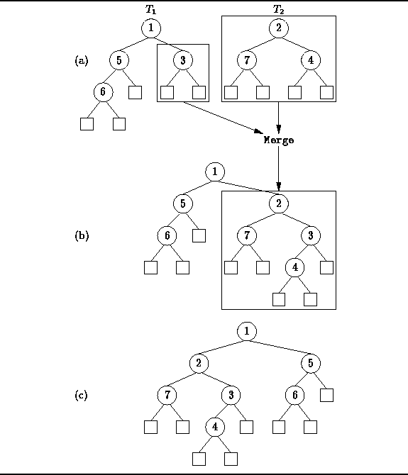
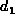
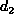
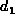
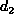
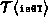

Data Structures and Algorithms
with Object-Oriented Design Patterns in Java
Data Structures and Algorithms
with Object-Oriented Design Patterns in JavaIn order to merge two leftist heaps, say h1 and h2, declared as follows
MergeablePriorityQueue h1 = new LeftistHeap (); MergeablePriorityQueue h2 = new LeftistHeap ();we invoke the merge method like this:
h1.merge (h2);The effect of the merge method is to take all the nodes from h2 and to attach them to h1, thus leaving h2 as the empty heap.
In order to achieve a logarithmic running time, it is important for the merge method to do all its work on the right sides of h1 and h2. It turns out that the algorithm for merging leftist heaps is actually quite simple.
To begin with, if h1 is the empty heap, then we can simply swap the contents of h1 and h2. Otherwise, let us assume that the root of h2 is larger than the root of h1. Then we can merge the two heaps by recursively merging h2 with the right subheap of h1. After doing so, it may turn out that the right subheap of h1 now has a larger null path length than the left subheap. This we rectify by swapping the left and right subheaps so that the result is again leftist. On the other hand, if h2 initially has the smaller root, we simply exchange the roles of h1 and h2 and proceed as above.
Figure  illustrates the merge operation.
In this example, we wish to merge the two trees
illustrates the merge operation.
In this example, we wish to merge the two trees  and
and  shown in Figure (a).
Since
shown in Figure (a).
Since  has the larger root,
it is recursively merged with the right subtree of
has the larger root,
it is recursively merged with the right subtree of  .
The result of that merge replaces the right subtree of
.
The result of that merge replaces the right subtree of  as shown in Figure (b).
Since the null path length of the right subtree is now greater than the left,
the subtrees of
as shown in Figure (b).
Since the null path length of the right subtree is now greater than the left,
the subtrees of  are swapped giving the leftist heap
shown in Figure (c).
are swapped giving the leftist heap
shown in Figure (c).

Figure: Merging leftist heaps.
Program gives the code for the merge
method of the LeftistHeap class.
The merge method makes use of two other methods,
swapContents and swapSubtrees.
The swapContents method takes as its argument a leftist heap,
and exchanges all the contents (key and subtrees)
of this heap with the given one.
The swapSubtrees method exchanges the left and right subtrees
of this node.
The implementation of these routines is trivial and is left as a project
for the reader (Project ).
Clearly, the worst-case running time for each of these routines is O(1).
The merge method only visits nodes on the rightmost paths
of the trees being merged.
Suppose we are merging two trees, say  and
and  ,
with null path lengths  and , respectively.
Then the running time of the merge method is
,
with null path lengths  and , respectively.
Then the running time of the merge method is
where  is time required to compare two keys.
If we assume that the time to compare two keys is a constant,
then we get ,
where and are the number of internal nodes in
trees  and
and  , respectively.
, respectively.

Program: LeftistHeap class merge method.
 Copyright © 1998 by Bruno R. Preiss, P.Eng. All rights reserved.
Copyright © 1998 by Bruno R. Preiss, P.Eng. All rights reserved.